Best Places in Turkey
Tourism in Turkey is characterized by diversity, and in the last few years it has become a global destination for Tourism thanks to the ingredients it possesses to achieve this.
Istanbul
Istanbul Tourism in Turkey starts from Istanbol,as it is the first destination for tourist trips to Turkey from all over the world.
Istanbul is full of many archaeological, historical, recreational and tourist attractions, and Istanbul is also characterized by wonderful views directly on the sea.
Ankara
Ankara, the capital and one of Turkey’s cities that enjoys the diversity of tourism areas in Turkey that can be toured, it includes many historical places such as archaeological museums and special recreational places such as beautiful gardens and fun markets, where you can spend times full of fun and entertainment with your families and friends by visiting these places tourism in Ankara.
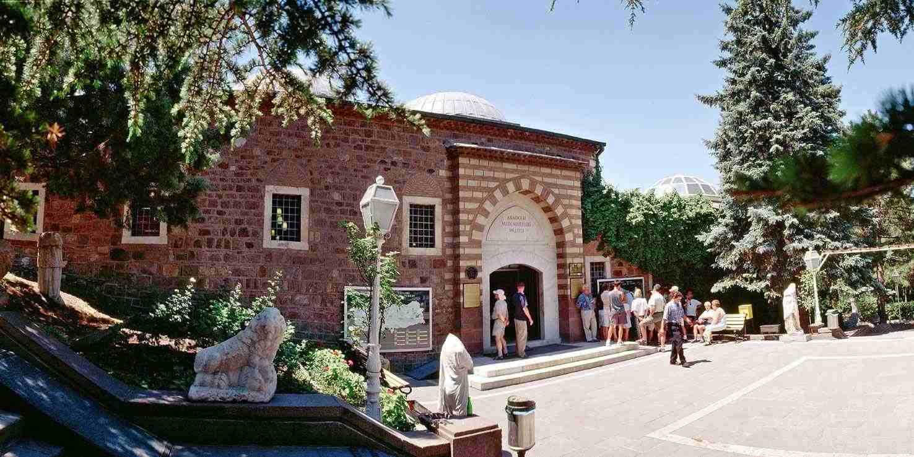 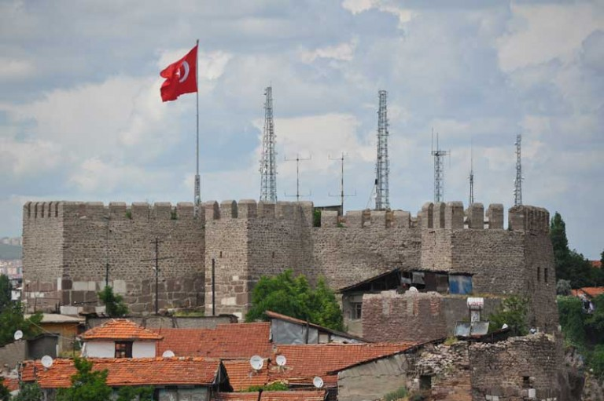 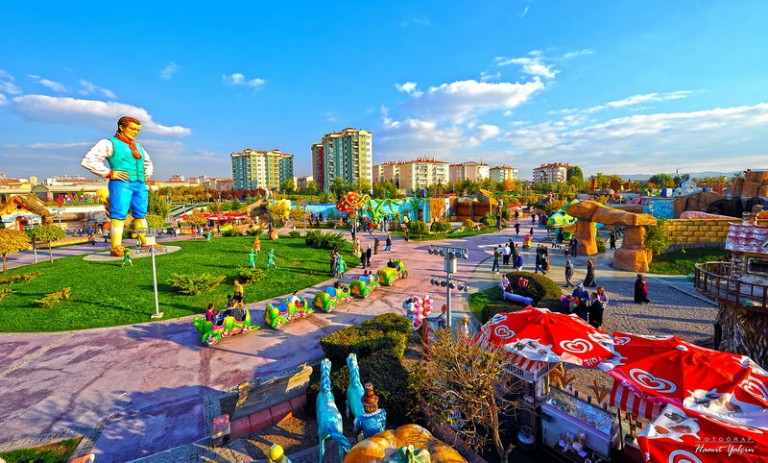 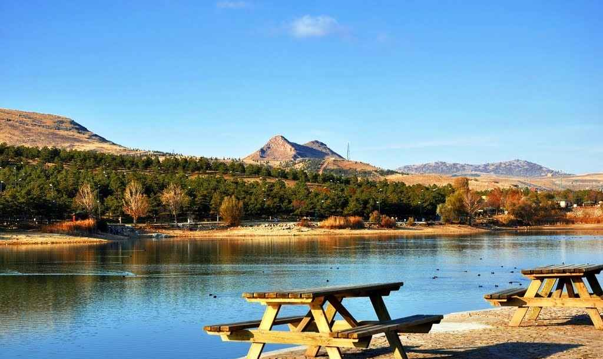Trabzon
Trabzon is a wonderful and distinctive city from the rest of Turkey and attracts visitors from all over the world due to its beautiful climate and charming nature.
It is considered one of the most beautiful tourist areas in Turkey and is located in the north of Turkey and is one of the largest provinces in the northern region on the Black Sea coast.
Antalya
Antalya is one of the most wonderful tourist places in Turkey, and it is one of the amazing parts of the Turkish Mediterranean coast, which combines the civilization of the past with the charm of the present, where you see the restored Ottoman palaces and boutique hotels spread throughout the city, and you can enjoy its green landscapes by visiting Diodan Waterfalls or Gorgeous Kursunlu, have a great time in the land of legends.
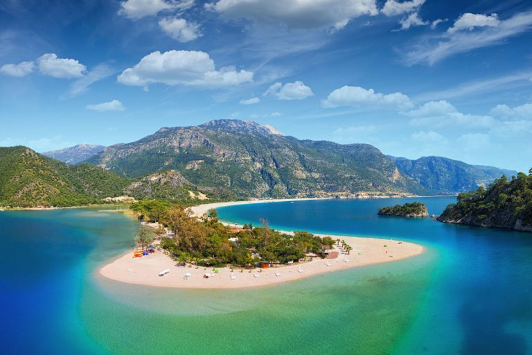 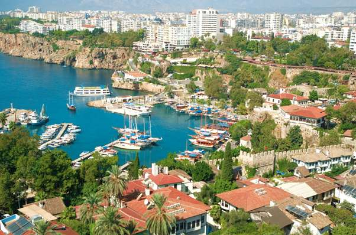 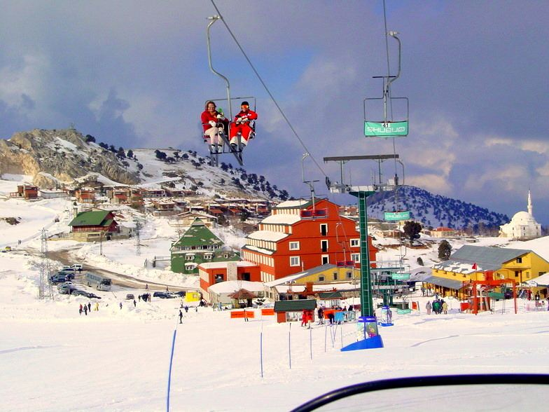 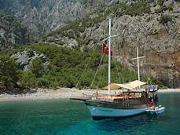Cappadocia
Cappadocia is considered a touristic archaeological city par excellence, and it was inscribed on the World Heritage List of the United Nations UNESCO, at the committee meeting during the ninth session of 1985 AD, where Cappadocia embraces many unique monuments.
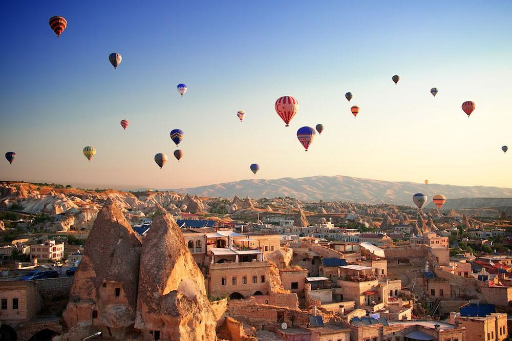 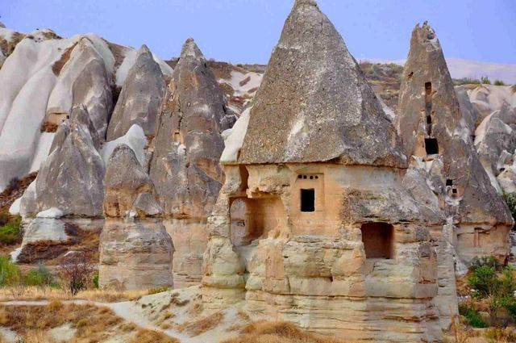 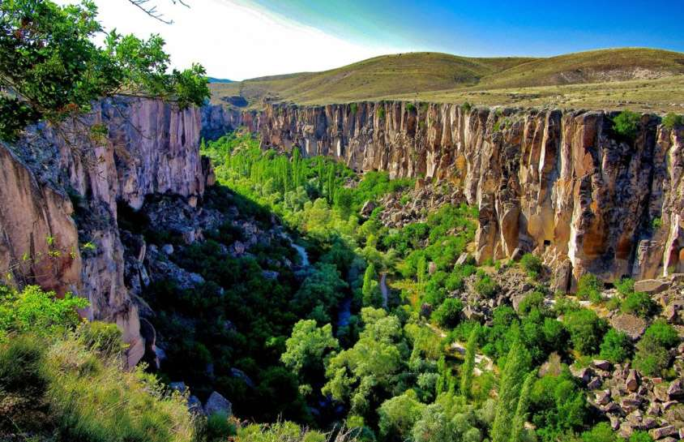 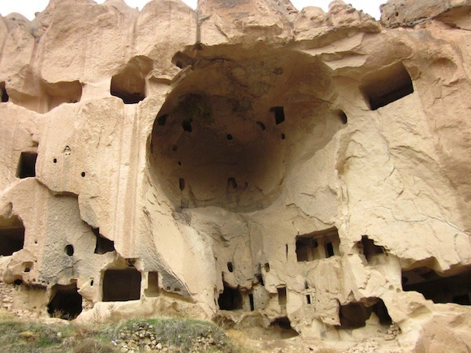